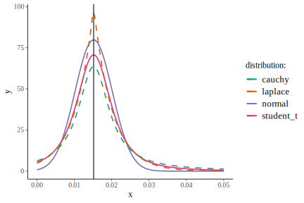
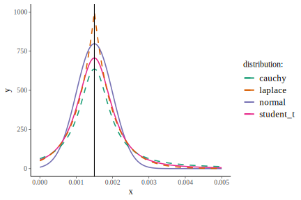

Model
Below is the model I’m fitting:
\[ X_{t+1} = X_t + R_0 \left( 1 - \alpha ~ \text{e}^{X_t} \right) \]
where \(X_t\) is log aphid counts for a particular plant at time \(t\), \(R_0\) is the aphid line’s growth rate, and \(\alpha\) is the line’s density dependence. Growth rates get one parameter for each aphid line. Density dependence, however, gets both mean and standard deviation estimates per aphid line, plus an overall \(\alpha\) estimate per time-series, as a sort of random effect.
Note that all parameters below are truncated to be > 0.
Growth rates
From data sent to me from A.R. Ives related to this paper:
Meisner, M. H., J. P. Harmon, and A. R. Ives. 2014. Temperature effects on long-term population dynamics in a parasitoid–host system. Ecological Monographs 84:457–476.
For fecundity, juvenile survival, and adult survival, the dataset had low and high estimates. I created two Leslie matrices, one with all of the high estimates and another with all the lower estimates. For each of these Leslie matrices, I estimated the intrinsic daily rate of increase (\(r\)) in aphid populations in the lab as \(r = \log(\lambda)\), where \(\lambda\) is the dominant eigenvector of the matrix. Thus I have fast and slow estimates of population growth, and from these I estimated the mean and standard deviation of the population-growth parameter. If the clonal lines from Meisner et al. (2014) are representative of the lines we currently have, and if these Leslie matrices truly represent the edges of possible \(r\) values, then this standard deviation should be an upper estimate. The SE of \(r\) is what I’ll use for the standard deviation of the mean.
fast <- read_csv("data-raw/leslie_fast.csv", col_names = FALSE,
col_types = cols(.default = col_double())) %>%
as.matrix() %>%
eigen() %>%
.[["values"]] %>%
.[1] %>%
Re() %>%
log()
slow <- read_csv("data-raw/leslie_slow.csv", col_names = FALSE,
col_types = cols(.default = col_double())) %>%
as.matrix() %>%
eigen() %>%
.[["values"]] %>%
.[1] %>%
Re() %>%
log()
fast; slow
#> [1] 0.2863108
#> [1] 0.2559663
mean(c(fast, slow)); sd(c(fast, slow))
#> [1] 0.2711385
#> [1] 0.02145683
sd(c(fast, slow)) / sqrt(2)
#> [1] 0.01517227The cauchy distribution with scale = 0.005 seems about right for sampling the among-line SD.
compare_priors(sd(c(fast, slow)) / sqrt(2), 0.005, xlim = c(0, 0.05)) +
geom_vline(xintercept = sd(c(fast, slow)) / sqrt(2))
Density dependence
Among-line distribution
Because Meisner et al. (2014) used cages of 8 plants, I’m setting my mean for \(\alpha\) by multiplying their density-dependence estimate (\(0.000467\)) by 8: \(\bar\alpha = 0.000467 \times 8 = 0.003736\).
They parameterized their density dependence slightly differently from the model I’m using, so I’m setting the standard deviation for \(\alpha\) to be fairly wide. So for the distribution of mean alpha among all lines, the normal curve below looks good to me.

For sampling mean alphas for each line, I think a scale of 0.0015 is still fine, but I’ll use the cauchy distribution because of its heavier tails.

For the among-line SD distribution, I used a cauchy distribution with location = 0.0015 and scale = 0.0005 because it looks most reasonable to me.

Within-line distribution
I’m really not sure about the degree to which different plants will affect the density dependence within an aphid line. I’ll use some raw data from Meisner et al. (2014) to get some idea. Below is from their cage experiments when they added parasitoid wasps after aphid densities were allowed to peak (35 days). I didn’t use these estimates for mean alpha because of the potential effect of wasps, but this is probably as good an estimate of variance among plants that I’ll get. Notice that I’m dividing the max number of aphids by 8 because there were 8 plants in this experiment.
read_csv("data-raw/MeisnerLongtermCageData.csv",
col_types = "iiiiii") %>%
filter(treatment == 0, year == 2009) %>%
group_by(replicate) %>%
summarize(alpha = 1 / max(aphids / 8)) %>%
select(alpha) %>%
summarize(sd = sd(alpha)) %>%
unlist() %>%
signif(3)
#> sd
#> 0.00142I’m choosing a cauchy distribution with location of 0.00142 and scale of 0.02 because I’m pretty uncertain of this parameter.